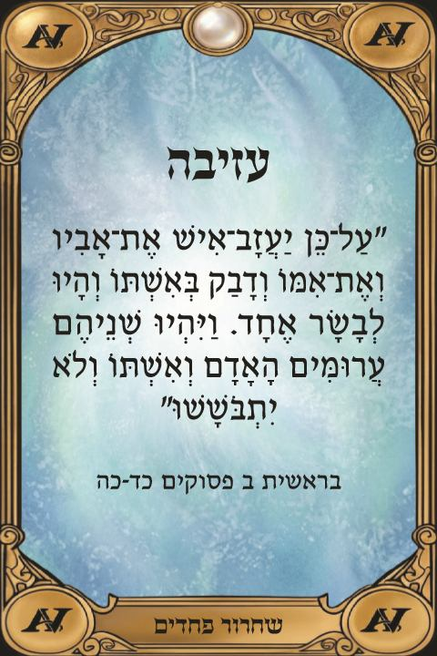

56/72אלמנט מים
עזיבה
עַל־כֵּן יַעֲזׇב־אִישׁ אֶת־אָבִיו וְאֶת־אִמּוֹ וְדָבַק בְּאִשְׁתּוֹ וְהָיוּ לְבָשָׂר אֶחָד וַיִּהְיוּ שְׁנֵיהֶם עֲרוּמִּים הָאָדָם וְאִשְׁתּוֹ וְלֹא יִתְבֹּשָׁשׁוּבראשית ב, כד-כה
משמעות הקלף
מעבר לשלב הבא ע"י שחרור פחדים ודבקות באהבה.